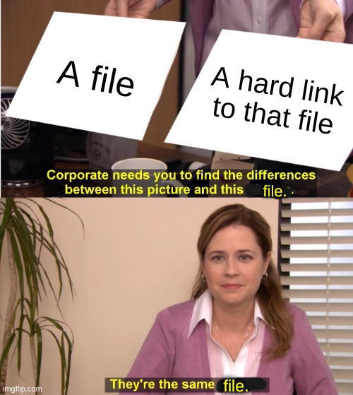

Deployment Config
When you actually want to use your merged mods, they will need to be deployed. This is the most critical step to actually using mods when you play the game.
Note that you have the option to deploy automatically or not. If you do not deploy automatically, you can make whatever changes to your load order, and even apply them, but still not export the final merged mod to its destination until you're ready. This is most useful for console players, who, for example, might want to manage mods on the PC at any time but wait until they're ready to insert their SD card before deploying the final pack. For emulator users, it is generally more useful to use automatic deployment.
Deployment Locations
Where should you deploy your mods? It depends mostly on where you play your game.
Cemu
Cemu users will generally want to deploy their mods as a graphic pack. In that
case you will need to set your deployment location somewhere inside Cemu's
graphicPacks folder. A customary option is a new folder named
BreathOfTheWild_UKMM. So, for example, the full path might be something like:
C:\Cemu\graphicPacks\BreathOfTheWild_UKMM.
Additional note for Cemu users: You almost certainly want the "Deploy rules.txt" option selected for Cemu integration.
Wii U
Wii U users have a few options, but the most widely used and supported method to
load mods is via SDCafiine for the Wii U Plugin
System.
In that case you would generally want your mods to end up on your SD card under
something like /sdcafiine/<title ID>/ukmm. If you use UKMM while your SD card
is not in, however, you might want to set a temporary directory for deploying
mods, or you can merge without the SD card but wait and deploy when the SD card
is mountained.
Switch
With the Switch, you generally want your mods to end up on your SD card under
/atmosphere/contents. If you use UKMM while your SD card is not in, however,
you might want to set a temporary directory for deploying mods, or you can merge
without the SD card but wait and deploy when the SD card is mountained.
Yuzu or Ryujinx
Yuzu and Ryujinx both allow you to install mods in two different locations, one specific to their own files and the other for emulating Atmosphere's LayeredFS setup on SD card. You must use the LayeredFS arrangement.
So, for example, the Yuzu user storage folder is
C:\Users\[USER]\AppData\Roaming\yuzu on Windows or ~/.local/share/yuzu on
Linux. In this case, you want your deployment folder at
[USER-FOLDER]/sdmc/atmosphere/contents.
Note on Switch-based deployment: When using Switch, Yuzu, or Ryujinx, you will need to generally use the
contentsfolder as the actual deployment folder, and the two title ID folders for BOTW and its DLC will be used to store mod files. If you mod other games besides BOTW, note that they will also have their mods in a title ID folder in the samecontentsfolder, and some operations could affect them. Be aware of this particularly when using the symlink method discussed below.
Deployment Methods
UKMM offers three methods to deploy mods. Which one is best depends heavily on your system, so I recommend taking careful note of these options and how they work.
Copy
The simplest option. It just copies everything from UKMM's internal merging folder into the deployment folder.
Advantages
- Easy
- Pretty much always works
Disadvantages
- Can be very slow
- Wastes disk space
Best for: SD cards
Hard Links
A safe option to save space when everything is on the same volume/partition. It creates a hard link of every file from UKMM's internal merging folder into the deployment folder, which uses no additional disk space. Both copies are literally the same file.

Advantages
- Pretty fast
- No wasted disk space
Disadvantages
- Only works if everything is on the same volume/partition
- Slower than symlinks
Best for: Windows systems where everything is on one volume
Symlink
Turns the deployment folder into a mere link to the UKMM's internal merged folder. This means deployment isn't even needed; all changes to your load order are automatically present wherever you have your mods deployed.
Unfortunately, this is also the weirdest option on Windows. (On Linux it should pretty much Just Work™.) Windows is weird about symbolic links. Because of this, UKMM will first attempt to use a "directory junction," a dumb alternative to a symbolic link which only works on internal drives. Removeable drives and networked drives are not supported. If that fails, it will try to use a regular directory symbolic link. These have fewer restrictions, but usually (for some dumb reason) require administrator permissions to create.1
Note for Switch/Yuzu/Ryujinx: Since the deployment folder will need to be set the
atmosphere/contentsroot, and it will deploy the two title ID folders for BOTW and its DLC inside, you may run into issues if you also have mods for other games (other title IDs). They might be erased or end up inside UKMM's storage folder, depening on your precise process and settings.
So, in sum:
Advantages
- Instant, transparent deployment
- No wasted disk space
Disadvantages
- Windows support is complicated
- No chance to change your mind before deploying mods after applying load order changes
- Does not mesh well for Switch users modding other games
Best for: Linux systems, or advanced users on Windows
Starting back in Windows 10, build 14972, it has been possible to create symbolic links on Windows without administrator permissions, but it's not automatic. Check the Windows blog announcement for more information.